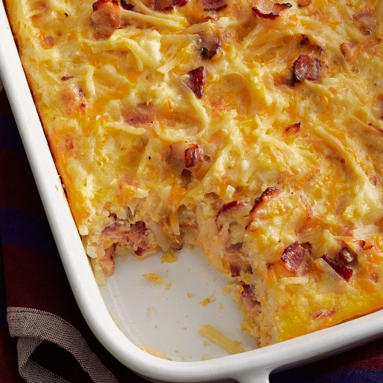

Amish Breakfast Casserole

Description
This crowd-pleasing Amish breakfast casserole recipe is not only heart and filling, it's made with budget friendly ingredients you may already have on hand. To store the casserole, you can either cover it tightly or place it in an airtight container. Store in the refrigerator for up to three days. Reheat in the microwave or in the oven.
The basic ingredients you'll need to make this Amish breakfast casserole are bacon, onion, eggs, hash browns and cheese. If you're looking to make this dish ahead of time, simply prepare the ingredients, pour the mixture into a prepared casserole fish, cover tightly, and refrigerate for up to two days. Uncover and bake as directed. Scroll down below for the full ingredient list and step-by-step instructions of this recipe!
Ingredients
- 1 pound sliced bacon, diced
- 1 medium sweet onion, chopped
- 9 large eggs, lightly beaten
- 4 cups frozen shredded has brown potatoes, thawed
- 2 cups shredded Cheddar cheese
- 1 1/2 cups small curd cottage cheese
- 1 1/4 cups shredded Swiss cheese
Steps
- Preheat the oven to 350 degrees F (175 degrees C). Grease a 9x13-inch baking dish.
- Heat a large skillet over medium-high heat; cook and stir bacon and onion until bacon is evenly browned, about 10 minutes. Drain.
- Transfer bacon and onion to a large bowl. Stir in eggs, potatoes, Cheddar cheese, cottage cheese, and Swiss cheese. Pour mixture into the prepared baking dish.
- Bake in the preheated oven until eggs are set and cheese is melted, 45 to 50 minutes. Let stand 10 minutes before cutting and serving.
Click here to view the original recipe webpage